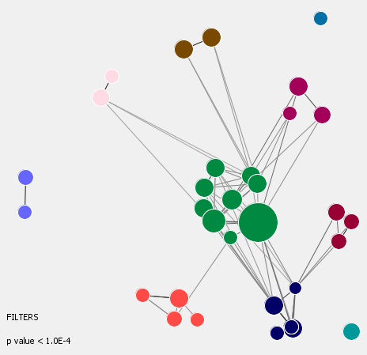

Giraph provides a graphical way to explore and present results of gene ontology and other
functional analyses.
There is often a lot of redundancy in the results of functional analysis of gene sets, so Giraph groups similar functional categories together.

Each circle represents a functional category.
The size of the circle is related to the number of genes from the query list that are in the category.
The proximity of the circles is related to the proportion of genes that overlap between the sets.
A list of human or mouse gene names can be entered.
OR
Giraph can accept the output of functional analyses from other programs.